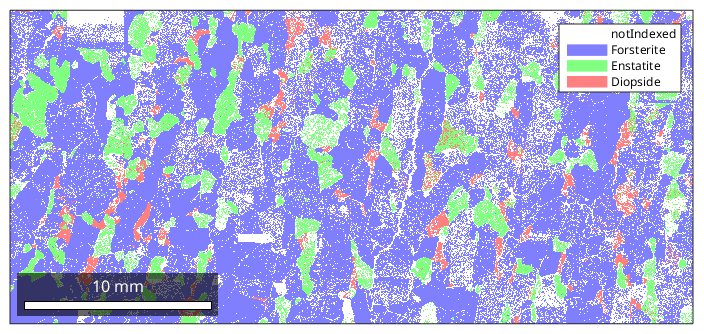
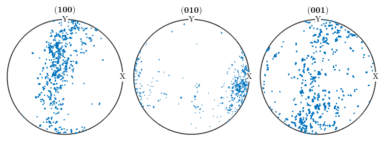
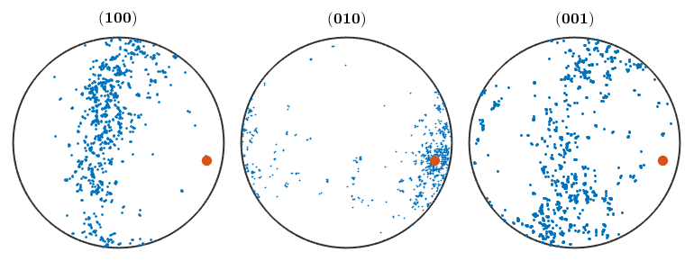
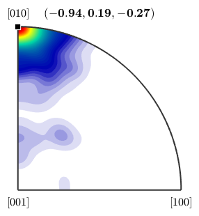
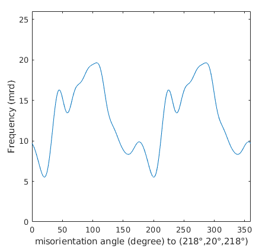
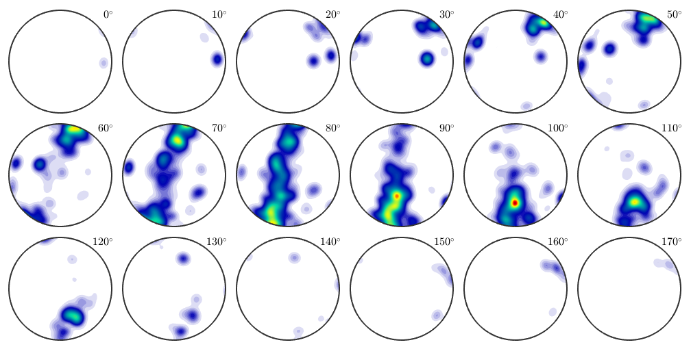

Here we discuss tools for the analysis of EBSD data which are independent from its spatial coordinates. For spatial analysis we refer to this page.
| On this page ... |
| Data import |
| Orientation plot |
Let us first import some EBSD data:
plotx2east ebsd = loadEBSD(fullfile(mtexDataPath,'EBSD','Forsterite.ctf'),... 'convertEuler2SpatialReferenceFrame'); plot(ebsd)
We start our investiagations of the Forsterite phase by plotting some pole figures
cs = ebsd('Forsterite').CS % the crystal symmetry of the forsterite phase h = [Miller(1,0,0,cs),Miller(0,1,0,cs),Miller(0,0,1,cs)]; plotPDF(ebsd('Forsterite').orientations,h,'antipodal')
cs = crystalSymmetry mineral : Forsterite color : light blue symmetry: mmm a, b, c : 4.8, 10, 6 I'm plotting 1250 random orientations out of 152345 given orientations You can specify the the number points by the option "points". The option "all" ensures that all data are plotted
From the {100} pole figure we might suspect a fibre texture present in our data. Lets check this. First we determine the vector orhtogonal to fibre in the {100} pole figure
% the orientations of the Forsterite phase ori = ebsd('Forsterite').orientations % the vectors in the 100 pole figure r = ori * Miller(1,0,0,ori.CS) % the vector best orthogonal to all r rOrth = perp(r) % output hold on plot(rOrth) hold off
ori = orientation
size: 152345 x 1
crystal symmetry : Forsterite (mmm)
specimen symmetry: 1
r = vector3d
size: 152345 x 1
rOrth = vector3d
size: 1 x 1
x y z
-0.944141 0.189955 -0.269287
 we can check how large is the number of orientations that are in the (100) polegigure within a 10 degree fibre around the great circle with center rOrth. The following line gives the result in percent
100 * sum(angle(r,rOrth)>80*degree) / length(ori)
ans = 78.7732
Next we want to answer the question which crystal direction is mapped to rOrth. To this end we look at the corresponding inverse pole figure
plotIPDF(ebsd('Forsterite').orientations,rOrth,'smooth') annotate(Miller(0,1,0,cs))
From the inverse pole figure it becomes clear that the orientations are close to the fibre Miller(0,1,0), rOrth. Let check this by computing the fibre volume in percent
100 * fibreVolume(ebsd('Forsterite').orientations,Miller(0,1,0,cs),rOrth,10*degree)ans = 27.9806
Suprisingly this value is significantly lower then the value we obtained we looking only at the 100 pole figure. Finaly lets plot the ODF along this fibre
odf = calcODF(ebsd('Forsterite').orientations)
plotFibre(odf,Miller(0,1,0,cs),rOrth)
ylim([0,26])
odf = ODF
crystal symmetry : Forsterite (mmm)
specimen symmetry: 1
Radially symmetric portion:
kernel: de la Vallee Poussin, halfwidth 7.4°
center: 2314 orientations, resolution: 3.7°
weight: 1
 We see that to ODF is far from beeing constant along the fibre. Thus, together with observation about the small fibre volume we would reject the hypothesis of an fibre texture.
Let finaly plot the ODF in orientation space to verify our decision
plot(odf,'sigma')Plotting ODF as sigma sections, range: 0° - 170°
Here we see the typical large individuell spots that are typical for large grains. Thus the ODF estimated from the EBSD data and all our previous analysis suffers from the fact that to few grains have been measured. For texture analysis it would have been favourable to measure at a lower resultion but a larger region.
| DocHelp 0.1 beta |